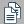

This section provides functions for recommendation network visualization. You may see the buttons on the right side of the toolbar like if the recommendation network is based on Node Type. The buttons will be if the recommendation network is based on Attribute.
Recommendation Based on Node Type
Click the button, a recommendation layout will be displayed like this:
The node colored red is the "requestor" of the recommendation, the node colored green is the "recommendation" and the node colored yellow is the "target" of the recommendation.
If you want to see paths with one more step between the "requestor" and the "recommendation" as well as between the
"recommendation" and the "target", click the  button.
button.
Recommendation Based on Attribute
Click the button, a recommendation layout will be displayed similar to this:

The bigger node colored red is the "requestor" of the recommendation, the node colored green is the "recommendation". The dotted circles indicate how many steps from the requestor to the recommendation. The straight dotted line means there is no direct recommended relations, but only not recommended relations between the requestor and the recommendation. When mouse hovers over the dotted line, the not recommended relations will be displayed as following:

We can see, for this case, there are three direct relations between requestor and the recommendation, but those relations are not recommended. To see the recommended relations between the requestor and the recommendation, hover or click the recommendation node (green node), and you will get the visualization as following. Click any blank space on the screen and you will be back to the dotted line.

All the paths from requestor to recommendation are by way of intermediary nodes. If you want to show more than one recommendation network on the same screen, just select the recommendation node you want. See Node Selection and Deselection to learn how to select your desired node(s).
The above shows all the recommended relations for three recommendations at the same screen.
The visualizer also provides a function to see relations which are not recommended, click the  button to do so.
button to do so.
The button  triggers a window the describes why this node is recommended. The contents of this description are similar to this:
To obtain technical support, please send email to: ciknow@northwestern.edu